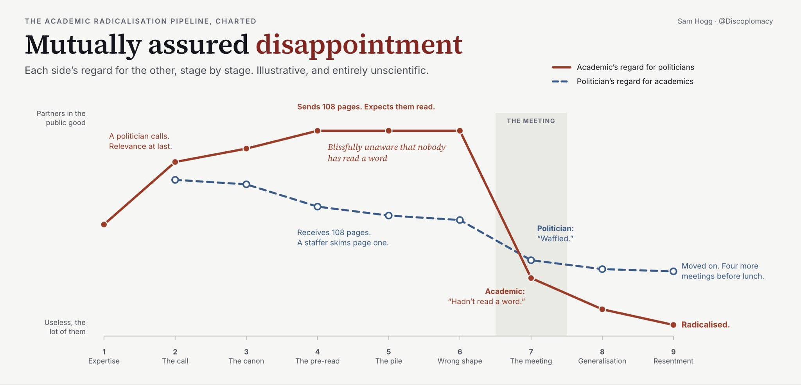

How To Talk To Politicians
A handful of easy rules to remember

I worked around Westminster for the better part of my twenties: first analysing politicians, then working for a politician, then writing analysis for other politicians and ambassadors, then running a company analysing the entire space. I find deep satisfaction in finding ways to move ideas through opaque systems and introducing the right people at the right time to the right information. In the latter half of my career I’ve worked with technologists in many shapes and sizes, and watched the frustration and confusion on both sides of the equation when politicians and technologists collide.
In the spirit of publishing scattered field notes more frequently, this note sets out some bits that will hopefully be relevant to both people interested in British politics, and also those who work downstream of US and China (on tech among other things.) It is not a ‘how to’ assessment, rather a series of observations gathered first hand or observed from conversations with others.
Speaking to a Politician
There are three useful primary rules you should follow when speaking to a British politician.
- First, assume they have a dozen other meetings that day and will forget the bulk of what you say to them, even if they requested the meeting. Time is one of the many commodities they cannot buy and their attention is often scattered (they will sometimes literally tweet during a meeting).
- Second, assume that positions which seem obvious to you won’t necessarily be obvious to them or their team, or compelling on their own. Politicians have heard many predictions of catastrophe and imminent disasters before. This is particularly important if you decide to start pontificating about AI risk or something that seems abstract.
- Third, have a specific ask which is sensitive to the incentives that drive a politician’s own interests. Will this help them win an election or vote, win praise from their peers (online and in the media), or help their ego and legacy? You are almost certainly not here for a general chat and it’s going to annoy both sides if the MP leaves the room and says to their researcher “what the hell was that about?”
Some secondary rules.
- Please dress appropriately. You are not Mark Zuckerberg in The Social Network. Shower, shave, put on a suit or at least something smartish looking. You are engaging with an institution several centuries older than you and your company/organisation/field (in some cases).
- Second, don’t just read out a massive report summary. That ties back into the point above about understanding incentives. I used to observe this and have since coined a term for it: The Academic Radicalisation Pipeline.
- Third, do some research on the politician. They are human (most of the time). They have families, they usually have a sports team they support/pretend to support, or are running a campaign locally too. In a totally ‘rational’ world it may seem like small talk is a poor expenditure of energy, but it’s not. It is how you begin to form the very human bonds you will need to pass your ideas through a system. You have absolutely no idea if the person you’re speaking to has had the worst morning of their career.
On that point: you should be extremely clear with yourself what it is exactly you do. Are you an advocate? A campaigner? An analyst? Westminster is swamped with people in the first two camps pretending to be from the last. It damages our democracy if you try to smuggle ideas as non-partisan or analytically neutral to a non-expert audience that doesn’t know better. We often talk of politicians not being able to make trade offs, but - in my view - this is in part because too many groups/advocates/lobbyists present solutions without bothering to articulate or cost any meaningful trade off. This is particularly painful because it retards our ability to have strategic discussions.
Finally: It’s a good rule of thumb to always assume intelligence but not knowledge.